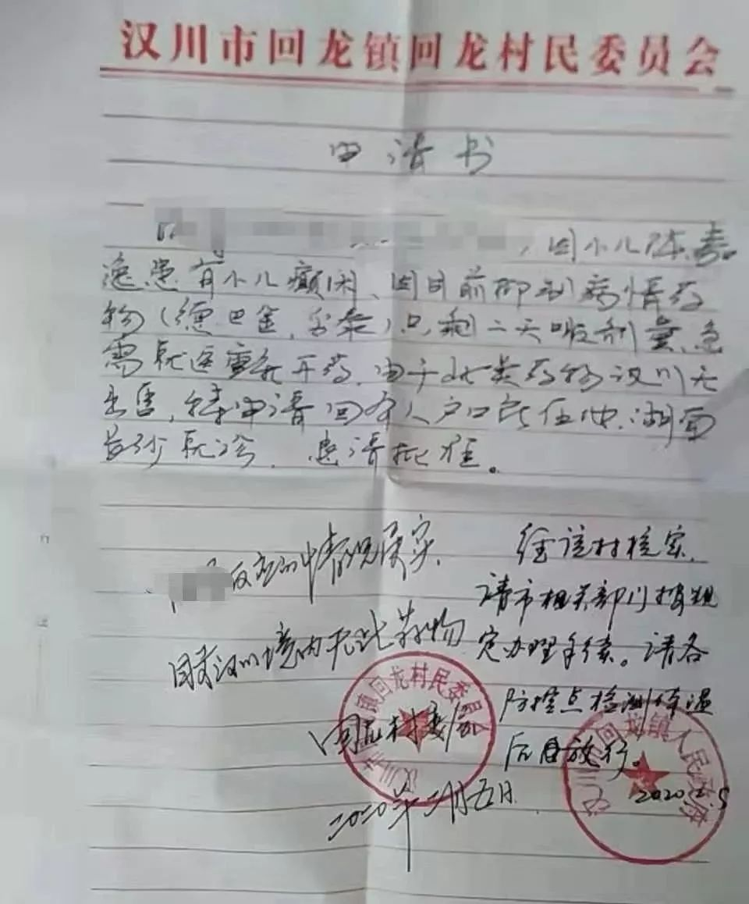
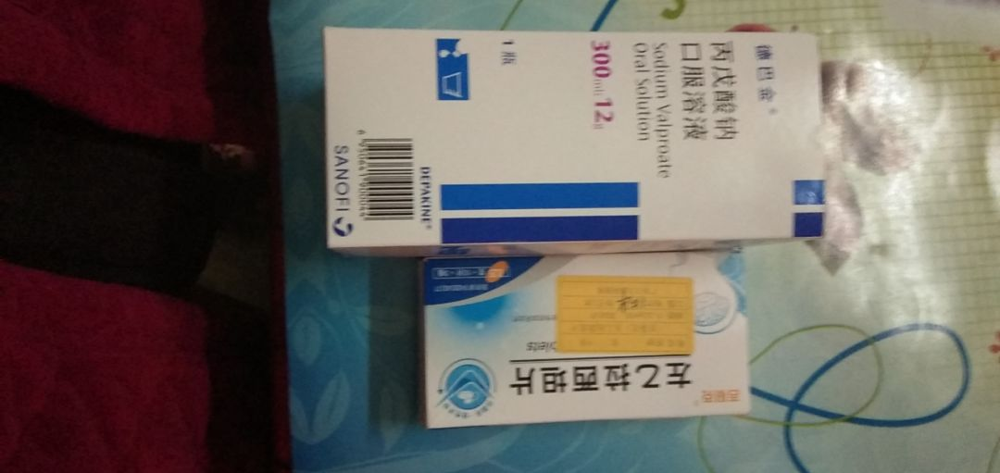

“湖北人，离我远点！”丨特别报道
原文链接 备份链接 文/麓泉 编辑/大风 从1月23日算起，武汉宣布封城已经大概过去了半个月的时间。 一时间，湖北乃至其中的任何一个城市，都成了闻之色变的词语，与湖北有关的人成了全国各地区无差别“歧视”的对象。 封城后的武汉，图源于微博林 …

刘晓红看着愈演愈烈的疫情，儿子聪聪的抗癫痫药却越吃越少，她有些慌了。
聪聪现年5岁，2岁时被诊断为癫痫。现在必须每天两次，吃两种药物来控制病情。但受“封村”影响，药物无法补充，现有药物只能支撑到2月12日。
癫痫俗称“羊癫风”，临床症状为患者突然意识丧失，吐白沫，肌肉强直性收缩等。目前，药物是治疗和控制癫痫的主要手段。若患者在服药期间如果无故减药、断药，极易导致癫痫症状复发。而许多抗癫痫药物属于治疗神经类精神疾病的药品，购买相对困难。
1月21日，武汉“封城”前两天，刘晓红一家从长沙回到老家湖北汉川市回龙镇，准备过年，她计算好返程时间，为聪聪准备了二十多天的用药。

聪聪所吃的抗癫痫药物
此时，新型冠状病毒的报道已铺天盖地，但似乎并未影响到这个距离武汉110公里的小镇，“街上戴口罩的人不多，还有不少人在做生意。”刘晓红回忆说。
两天之后，形势严峻起来。“家家户户闭门谢客，各路口也设了检查站，严禁出入。”刘晓红一家被困到村里了。
“封村”后，无法外出的刘晓红曾委托亲戚在汉川市的医院拿药，但聪聪所需要的药物“德巴金丙戊酸钠口服溶液”以及“妥泰托吡酯片”当地均无法提供；刘晓红又委托上海，长沙等地的朋友邮寄药物过来，但因湖北目前的快递政策，药物无法进来。
2月5日，刘晓红曾开车欲回长沙拿药，在高速入口的路上被劝返。之后几天她又找了回龙镇政府、公安部门协调，但协调的结果只是“就近就医”。
此时的刘晓红说她不知道还能找谁，她只知道如果药没有了，聪聪的癫痫很有可能再次发作。

刘晓红拿到的由村委会和镇政府盖章的外出申请
家中有药，却无法去拿
刘晓红母子遇到的困境，在湖北癫痫儿童家庭并非个例。还有的家长因“封村封路”，即使有药，也拿不到孩子身边。
1月12日，家住湖北黄冈市的黄州区的王楚，带着妻子和两个孩子，开车回到100公里外的罗田县匡河镇过年。王楚两岁半的女儿患有癫痫，需要每天服用抗癫痫药物“开浦兰”和“奥卡西平片”控制病情。此次回匡河镇，王楚带好了女儿假期所需的药品。
1月24日除夕，王楚所在的村庄宣布“封村”。王楚称，村里直接用泥沙、树木将路封住，而回黄州要经过的其他村，甚至将路挖断。
黄楚所在村庄的路障
眼看女儿的药越吃越少，王楚想开车回黄州区的住所拿药，那里还有可供女儿服用半年的药物。但村主任却说，解除“封村”的时间还要等通知，如果现在想离开村子，那就自己去把路障清理掉。
现在女儿的药量还够撑4天，黄楚联系了黄州住所的社区人员把自家的门锁打开，并把药寄到匡河镇。但目前情况特殊，快递不知何时才能到，加之村路封锁，快递不能送到村里，王楚已经决定步行去镇上拿快递。
祖籍湖北汉川市新堰镇李慧同样也面临“有药拿不到”的尴尬境地。李慧的儿子诚诚今年8岁，已经持续治疗癫痫4年，现在需要每天吃两种药物控制病情。受湖北快递政策和“封村”影响，李慧在安徽住所的药物无法配送至她手上。
更麻烦的是诚诚还在做生酮饮食疗法，平时的食物都是由广东的营养师搭配好快递过来。如今不仅药物面临停止，营养师也无法及时从广东寄送配餐，而突然停止药物和生酮饮食，很有可能让诚诚多年的治疗功亏一篑。
注：生酮饮食是一个脂肪高比例、碳水化合物低比例，蛋白质和其他营养素合适的配方饮食。这一疗法上世纪用于治疗儿童难治性癫痫已数十年。
眼看诚诚在2月13日就会断药，李慧特别着急，此前的诚诚因为癫痫影响经常无法安睡，导致精神状态也不好，“如果诚诚癫痫再发作，很担心他无法继续上学。”

诚诚日常服用的药物
100多个癫痫家庭的燃眉之急何解？
据大米和小米了解，和以上3个家庭有类似情况的家庭，还有上百个，其中有孩子已经减药、断药，癫痫复发。他们主要面临两个困难：
一是买不到药。
非处方癫痫药物按规定可以在药店自行购买，但只有市级以上大药店才有；处方药必须在医院配药才可以得到，但目前湖北地区的三级甲等医院只接受发热病人，其他科室停诊；还有一些进口药物无法配送。
二是物流基本无法配送。
即便家长托人买到了药，但封路＋快递停运，药物也送不进来。
有热心人决定帮帮湖北的孩子，从2月6日起，上海的癫痫儿童母亲花妈，接连在微博上呼吁有关部门注意这个问题。看到花妈的倡议后，有医疗背景的志愿者闵磊、戴珅懿、韩志毅也都加入进来。
同时，花妈也为有买药需求的家庭建立起“湖北宝宝，加油！”微信群，和志愿者逐一统计每个家庭具体的药物需求和数量。

群里部分聊天截图
经过数天的奔走联络，几位志愿者联系到了常见癫痫药物的药企和药房。2月9日，志愿者紧急联系调配了一批药品，将于次日通过EMS送到家长手中。
由于癫痫药品种类多，一般药房存货较少，所以目前药物储备尚不足，以下药物还存在缺口：硝西泮，氯硝西泮，氯巴占，喜保宁、妥泰胶囊，奥卡西平口服液，开浦兰口服液、唑尼沙胺、左卡尼汀，亚叶酸钙等。
“就算有了药品，但是怎么送到村镇一级，交通和邮政依然是个难题。”花妈告诉大米和小米，目前药物的流通一般只能到市或者县一级。镇上的邮政基本上是3天左右去一次县里拿邮包，如果没有人催促，可能在县里仓库留存长达一周甚至更久。
接下来，他们在配齐药物的同时，也希望邮政等相关方面能改善业务流程，好让家长们能更快送到药。
亲爱的读者
这场湖北癫痫宝宝援助计划
现需要你的一份力量
▼
你可以帮助提供上述所需药品或相关购买渠道；
可以一起出谋划策，如何解决物流的最后一公里；
可以与被隔离在湖北的家庭一起分享癫痫宝宝护理经验、带娃经验；
……
如你有任何好的想法和资源，请联系：庄鸿韵（花妈）13764055515（微信同号）
注：刘晓红、王楚、李慧、聪聪、诚诚为化名。
-完-
采写|羲铮 大成 春桃
编辑|当当 内容顾问|孙旭阳

我是大米
她每天都在为特殊孩子家庭努力
微信扫一扫赞赏作者 赞赏
长按二维码向我转账
她每天都在为特殊孩子家庭努力
受苹果公司新规定影响，微信 iOS 版的赞赏功能被关闭，可通过二维码转账支持公众号。
文章已于修改
原文链接 备份链接 文/麓泉 编辑/大风 从1月23日算起，武汉宣布封城已经大概过去了半个月的时间。 一时间，湖北乃至其中的任何一个城市，都成了闻之色变的词语，与湖北有关的人成了全国各地区无差别“歧视”的对象。 封城后的武汉，图源于微博林 …
原文链接 备份链接 非常时期，武汉成了全国人民挂念、祈福的城市。封城后，武汉人民的真实生活是什么样？ 正和岛自1月26日起特别推出《叶青：我在武汉疫区的第N天》专栏。叶青是一位定居武汉40年的市民，也是一名学者和官员。接下来的一段时间，他 …
原文链接 备份链接 文 | 陈怡含 编辑 | 林鹏 元宵节的下午，50岁的货车司机肖红兵终于住进了汉中北服务区一个设施齐全的房间，洗上了20多天来的第一个热水澡。 肖红兵是湖北天门人，整个春节，他几乎没有离开过那辆鄂M3B350。一桩临时 …
原文链接 备份链接 【疫情之下】是苍衣社开设的非虚构故事专栏，记录在新型冠状病毒疫情蔓延时，普通中国人的抗疫报告。 大家好，我是脸叔。 在这个特殊时期，我社开设【疫情之下】专栏，记录普通人的抗疫故事。在这一场灾难中，没有人能够置身事 …
原文链接 备份链接 图/法新 文 |《财经》数据研究员 徐进 图 | 视觉中心总监 黎立 编辑 | 谢丽容 1. 今日概况： 2月9日0—24时，31个省（自治区、直辖市）和新疆生产建设兵团报告，新增确诊病例3062例（湖北2618 …